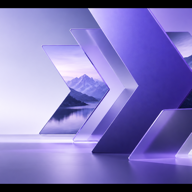
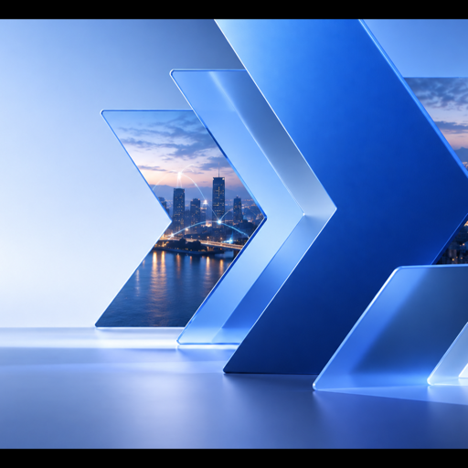

Componentes de interface
Inventário de front-end para Hub, Connect, Skills e Smart Planner. O Studio compartilha os componentes, mas usa chrome horizontal próprio.
Status e feedback
Sincronizado agoraPlano ativoAção necessária
Importação concluída: 14 campanhas identificadas.
Contexto e marca
 Centralcomm · Organização⌄
Centralcomm · Organização⌄Netflix · Marca ativa⌄
Seletor global
Trocar de produto · sessão única
Navegação lateral
Ativo e vazio

Nova variação
Media Studio · em processamento
Media Studio · em processamento
Nenhuma conta conectada.
Campos e filtros
TodosEm andamento
Onboarding moderado
Comece pelo objetivo
1 de 3 · pode ser dispensado
1 de 3 · pode ser dispensado
Uso da marca

3D fora do canvas
Onboarding, entrada e social.
Onboarding, entrada e social.
Raster compacto
Menu, favicon e estados.
Menu, favicon e estados.